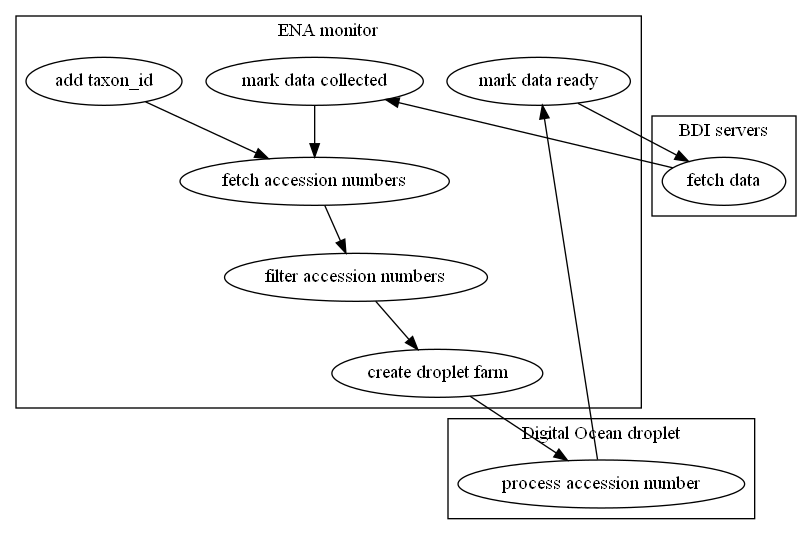

microfetch-pipeline
The microfetch-pipeline tracks European Nucleotide Archive entries by taxon identifiers and retrieves and filters the associated genomic data. These data are processed on a Digital Ocean droplet and the result fetched by servers at the Big Data Institute.
The pipeline has two separate components, the ENA monitor and the Data collector.
ENA monitor
The ENA monitor is the main component. This program can be given taxon ids to track. Tracked taxon ids will be serially processed, meaning they are looked up on the ENA database, the records retrieved and filtered, and the resulting records sent to a Digital Ocean droplet farm for processing. When processing is complete, the Digital Ocean droplet informs the ENA monitor, which in turn informs the Data collector.
The overview of the ENA monitor can be seen with the status subcommand:
docker exec microfetch python /app/src/taxon_tracker.py status
The status presents a summary of the central CSV file.
For more detailed information you can inspect that file directly (/app/data/microfetch.csv).
It looks like:
| taxon_id | last_checked | last_run_status | needs_attention | stage | stage_name | priority | generated_warning | checkpoint_time |
|---|---|---|---|---|---|---|---|---|
| 570 | in progress | 3 | filter accession CSV | 3 | 2022-05-03 09:09:51.093475 | |||
| 750 | error | 4 | create droplet farm | 0 | 2022-04-22 19:18:43.476658 | |||
| 755 | error | 4 | create droplet farm | 0 | 2022-05-03 08:53:01.363596 |
Installation
The ENA monitor is installed as a docker container created with the Dockerfile in the repository. The installation includes the commands to initialize the program.
Workflow
The ENA monitor's workflow uses two kinds of commands: queued commands and event loop commands.
This is a pictorial version of the workflow: 
Queued jobs
Queued commands are registered in a hidden directory (/app/data/.queue/) as empty files.
These commands are executed at the beginning of each program loop.
The queue is used to avoid conflicts in writing data to the central record file.
Add taxon ids to the tracker
Taxon ids can be added using the add subcommand.
Assuming you have the docker container for the app running as microfetch,
add taxon ids with the command:
docker exec microfetch python /app/src/taxon_tracker.py add 450 470 570 750
The above command will add the taxon ids 450, 470, 570, and 750 to tracking. If you are monitoring the output or logs for the main process, you'll see those being added before the next event loop step.
Mark data ready (callback)
When a Digital Ocean droplet has finished processing the accession numbers assigned to it, it sends a callback to the ENA monitor via HTTP. This HTTP request is captured by a minimal webserver and adds a mark data request to the queue. The command is:
update-droplet-status taxon_id droplet_ip new_status
In practice it will look something like:
update-droplet-status 450 8.35.22.10 ready
The ENA monitor simply alters the record for all accession numbers assigned to the droplet to show the given status. When the Data collector queries the ENA monitor for data ready to collect, the droplet IPs will be sent back in response.
Mark data collected (callback)
When the Data collector has collected data from a droplet it executes a small shell script callback:
python /app/src/taxon_tracker.py mark-collected -t taxon_id -d droplet_ip
The ENA monitor will then mark the droplet data as collected and destroy the droplet. If all droplets have had their data collected, the process is complete and the ENA monitor will mark the pipeline to start again from the beginning.
Event loop
The event loop is a heartbeat script that processes the next job in the loop. Each taxon id tracked has a job stage and a priority -- generally later stages in the update and retrieval process have a higher priority than earlier stages (meaning taxon ids tend to get processed to completion rather than starting lots of separate threads). Each job will either update the stage to the next point or trigger activity on remote systems that will update the stage via a callback.
Fetch accession numbers
The ENA stores records by 'accession numbers'. These numbers are accessed by taxon identifier. The first step in the ENA monitor pipeline is to use a taxon id to fetch accession numbers.
The fetching is done via a backend script that uses HTTP requests to the ENA API.
When the API is successfully contacted, it returns a CSV file that is stored as
/app/data/ENA_accession_metadata/<taxon_id>.csv.
This file has the form:
| experiment_accession | accession | sample_accession | secondary_sample_accession |
|---|---|---|---|
| ERX1851229 | SAMEA4362422 | SAMEA4362422 | ERS1273871 |
| SRX1972698 | SAMN02256443 | SAMN02256443 | SRS1581087 |
| SRX337460 | SAMN02298051 | SAMN02298051 | SRS471889 |
| SRX346404 | SAMN02344103 | SAMN02344103 | SRS477544 |
| SRX346419 | SAMN02344107 | SAMN02344107 | SRS477553 |
Its contents will be filtered for relevance and quality in the next step.
Filter accession numbers
Accession numbers are filtered for relevance.
The filtering creates a CSV file that is stored as
/app/data/ENA_accession_filtered/<taxon_id>.csv.
This file has the form:
| accession |
|---|
| SAMEA4362422 |
| SAMN02256443 |
| SAMN02298051 |
| SAMN02344103 |
| SAMN02344107 |
Create droplet farm
Once the list of accession numbers has been filtered to those that are good candidates for retrieval, the actual data are pulled down from the ENA using Digital Ocean droplets. Filtered accession numbers are divided up among the available droplets, and those droplets are initialized and left to run.
The file /app/data/ENA_accession_filtered/<taxon_id>.csv is updated to include droplet metadata:
| accession | droplet_group | droplet_ip | status |
|---|---|---|---|
| SAMEA4076733 | 0 | 127.0.0.1 | processing |
| SAMEA104200669 | 1 | 127.0.0.1 | processing |
| SAMEA4598506 | 0 | 127.0.0.1 | processing |
| SAMEA4598507 | 1 | 127.0.0.1 | processing |
When the droplets complete, they issue a data ready callback.
This step will only be run when droplets are available. If another taxon id is using the droplets, they will not be created until the data have been collected and the existing droplets destroyed.
Data collector
The Data collector downloads data from a Digital Ocean droplet and informs the ENA monitor, which deactivates the droplet.
Data collection
The data collector is used because the BDI servers have access/bandwidth limitations.
This script will check for droplets awaiting data collection and download the data. On completion, it will signal to the ENA monitor that the droplets can be destroyed.
Data collection callback
When data have been collected from the droplets, the collector will instruct the ENA monitor to mark the data as collected.
Errors and problems
When the ENA monitor runs into problems, it logs the errors and stops working with the taxon id that generated the error.
A list of the taxon ids that have errored can be viewed with the verbose output of the status subcommand:
docker exec microfetch python /app/src/taxon_tracker.py status -v 1
Logs
The actions of the ENA monitor are recorded in logs.
If the ENA monitor is started with the verbose flag (-v), the logging will be at DEBUG level,
otherwise it is INFO level.
The main log is found at /app/data/log/main.log, the server log at /app/data/log/server.log,
and the logs for individual taxon ids at /app/data/log/<taxon_id>.log.